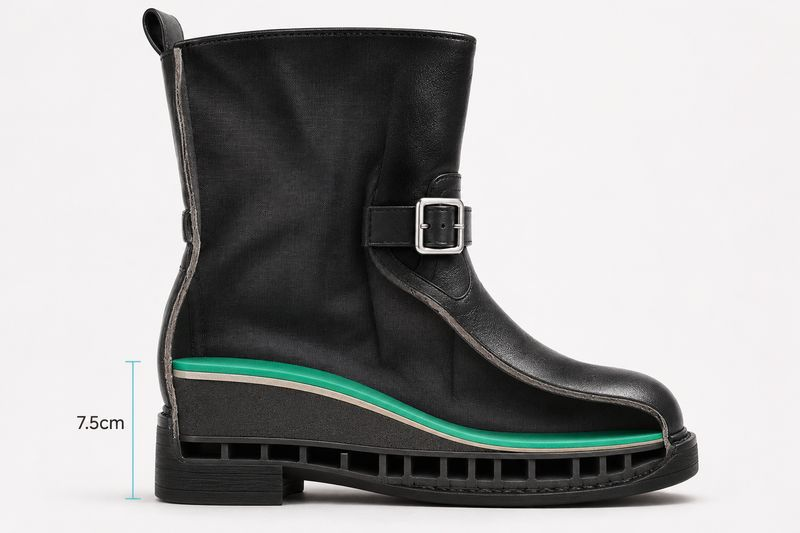

쭈꾸미님 놀킨 부츠 촬영 가이드
쭈꾸미님 영상 두 편의 흐름을 그대로 가져왔어요. 첫 장면은 영상 ①의 긴 길 배경 + 큰 제목을 카메라 가까이에서, 코디 소개는 영상 ②처럼 거울 셀카 전신이에요. 놀킨은 안쪽에 굽이 숨은 키높이 부츠라서, 굽을 집어 보여주는 장면과 다리·부츠가 돋보이는 짧은 하의 코디가 이번 영상의 포인트예요. 세로 9:16, 25초 안팎(20~35초)이에요.
이번 제품보내 드린 블랙 240이에요
 놀킨키높이 바이커 투웨이 미들부츠 · 블랙
놀킨키높이 바이커 투웨이 미들부츠 · 블랙카메라 가까이, 하의와 부츠가 화면을 꽉 채우게 + 큰 제목
영상 ①의 배경과 제목 방식을 가져와요. 길게 뻗은 길이나 복도를 배경으로 폰을 삼각대에 정면 고정해 주세요. 첫 화면이 썸네일이 돼요.
거리영상 ① 시작보다 훨씬 가까이 서 주세요. 복도 끝의 작은 전신이 아니라, 전신이 겨우 들어오거나 무릎 위부터 부츠 끝까지가 화면 대부분을 차지하는 거리예요. 짧은 하의와 부츠가 크게 보이면 돼요.
구도 참고짧은 하의 + 놀킨 차림으로 서서 포즈를 잡아 주세요. 제자리에서 한두 걸음 움직이는 정도면 충분해요. 발끝이 잘리지 않게 부탁드려요.
제목영상 ①처럼 큰 제목을 화면 가운데에 넣어 주세요. 다리와 부츠는 가리지 않는 높이면 돼요.
“말 안 하면 아무도 모르는 키높이 부츠!”
거울 셀카 전신으로 코디 소개
영상 ②의 인트로 흐름 그대로예요. 거울 앞에서 폰으로 얼굴을 가린 셀카 구도로, 짧은 하의 코디와 부츠 끝까지 한 화면에 담아 주세요.
흐름제목 자막 한 줄 → 포인트 자막 1~2개를 차례로 넣어 주세요. 영상 ②의 화살표처럼 다리·부츠 쪽을 가리키는 표시를 붙이면 좋아요.
“키 커 보이는 겨울룩 이거예요..🖤🖤”
“다리 라인까지 길어 보이고 ←”
부츠를 들고 안쪽 굽 집어주기
구도 참고부츠 한 짝을 얼굴 옆이나 화면 가운데로 들고, 손가락으로 안쪽 굽 높이를 집어 보여 주세요. 부츠가 화면을 크게 채우게 가까이 들어 주시면 돼요.
자막영상 ②처럼 손으로 짚는 순간에 맞춰 짧은 자막 한 줄이면 충분해요.
“겉으론 티 안 나는데 안에 7.5cm 굽이..🫢”


다리와 부츠가 돋보이는 코디, 신기 전·후 비교
하반신 강조영상 ②의 거울 셀카 구도에서 폰을 조금 내리거나 영상 ①처럼 고정 카메라 앞에서 허리 아래부터 부츠 끝까지 담아 주세요. 한쪽 다리를 살짝 앞으로 빼거나 옆으로 돌면 부츠 라인이 잘 보여요.
키 비교같은 자리·같은 카메라에서 신기 전(납작한 신발) → 놀킨 신은 후를 1~2초씩 이어 붙여 주세요. 키 차이가 한눈에 보이면 충분해요.
“다리도 길어 보임✨ 신기 전 → 신은 후”
투웨이로 바꿔 신는 모습을 넣고 싶으시면 이 장면에 1~2초 더해 주셔도 좋아요.
부츠가 크게 보이는 컷 + 댓글 할인 안내 자막
구도 참고마지막 컷은 놀킨이 크게 보이게 해 주세요. 첫 장면처럼 카메라 가까이 서서 하반신과 부츠가 화면을 채우는 컷, 또는 부츠 한 짝을 카메라 앞에 들어 보이는 컷 중 하나로 마무리해 주세요.
자막그 위에 구매 안내 자막을 얹어 주세요. 말투는 영상 ②의 “아무 댓글 고고!”처럼 쭈꾸미님 그대로면 돼요.
“댓글 남기면 할인코드 DM으로 보내드려요! 아무 댓글 고고!”
댓글을 남기면 자동 DM으로 할인 링크가 가도록 설정해 주세요. 20% 할인코드는 업로드 날짜가 정해지면 바로 보내 드릴게요. 영상에는 코드를 직접 넣지 않아도 돼요.
추가 컷 부탁드려요 신발만 보이는 정지 컷 · 2~3초
광고로 썼을 때 반응이 가장 좋았던 구도예요. 영상 중간이나 끝에 2~3초만 넣어 주시고, 이 컷은 자막·음악 없는 원본으로도 따로 보내 주세요. 아래 두 구도 중 하나로 꼭 찍어 주세요.
이것만 빼 주세요
부츠 가리기 — 자막·손·가방·긴 하의가 부츠 앞코와 윗단을 가리지 않게 해 주세요.
발끝 자르기 — 전신·하반신 장면은 부츠 끝까지 화면에 담아 주세요.
다른 신발 브랜드 이름·로고·상자, 유명인 이름, 저작권 음원은 넣지 않아요.
촬영 전 준비
일정 · 연락
- 업로드 날짜는 대화방에서 함께 정해요.
- 업로드 전에 영상과 캡션 초안을 먼저 보내 주세요. 확인하고 바로 답드릴게요.
- 편집본과 함께 자막·음악 없는 원본(클린본)도 따로 보내 주세요.
- 20% 할인코드는 업로드 날짜가 정해지면 보내 드려요. 업로드일부터 2주 동안 쓸 수 있어요.
- 댓글 자동 DM으로 할인 링크가 가도록 설정해 주세요.
- 캡션에 #착한구두 를 넣어 주세요.
- 영상은 세로 9:16, 20~35초로 찍어 주세요.
연락은 이 가이드를 받은 대화방으로 주세요.